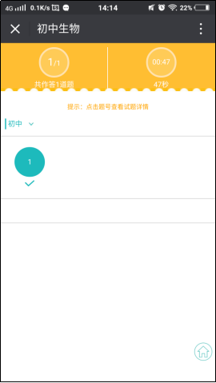

1.账号登录
1.1进入账号登录页
*新用户首次登录需要关注新东方邯郸学校微服务公众号 ，关注公众号后进入功能列表页面
*点击【我的】按钮，弹出一个列表，点击【账户】按钮，进入登录页面。
*点击使用说明，可以查看学生端使用手册
*点击我的主页进入学生个人主页

1.2学员号登录页
点击学生登录，跳转到学生登录页面，输入已注册的账号和密码点击登录，跳转到学生号登录页面
学员号登录：输入学员号，点击【检测】按钮会弹出一个学员信息框，核对后点击【立即关联】按钮，就会弹出“绑定成功”的提示信息之后就会跳转到课表页面。

1.3手机号登录页
手机号登录：输入报名时的手机号和报名时的姓名，点击【检测】按钮就会弹出一个学员信息框，核对后点击【立即关联】按钮，就会弹出“绑定成功”的提示信息之后就会跳转到课表页面。

2.课表
2.1进入课表功能页
没有登录的学员，登录后直接跳转到课表功能页面，已经登录的学员，进入到双师东方公众号功能列表页面，点击【我的】按钮，弹出一个列表，点击【课表】按钮，进入到课表页面。

2.2课表功能介绍
课表可以查看上课时间、课时、地点以及老师，日历上有课的日期会用小圆点标识，已经过去的日期，小圆点为灰色展示，没有过去的日期，小圆点为红色展示。当天日期如果有课的，下方会有课程提醒展示，点击课程提醒下每节课后边的【>】进入到课程详情页面，可以查看班级名称、班号、时间、教室、课时、课堂老师、课堂同学。点击课堂同学后【>】按钮可以查看课堂同学全部列表。

2.3课表功能介绍

*可以查看课程的详细信息
*点击如图表示的向上箭头，可以跳转到学生主页
2.4学生个人主页
*点击【学情】按钮跳转到学生学情页面
*点击【作业详情】按钮跳转到学生作业页面
*点击【作业报告】按钮跳转到作业报告页面，如图二所示
*点击作业报告页面中的【答题详情】按钮弹出对应课次答题详情如图三所示
3.学情
3.1进入学情功能页
学情进入，学员已经登录的，进入到公众号双师东方列表页面，点击【学情】按钮，进入到学情功能页面，没有登录的点击【学情】按钮会跳转到登录页面，登录后退出到双师东方功能列表页面，再次点击【学情】按钮进入到学情功能页面

3.2学情功能介绍
*学情页面展示入门测、出门测、期中测、期末测和入学测按钮，点击某个按钮会展示某个按钮页面
* 进入到学情页面默认为趋势图展示页面，当点击【报表】按钮就会跳转到报表页面，同样再次点击【趋势图】按钮时就会跳转到趋势图页面。
* 趋势图页面点击折线图上的小圆圈就会弹出一个列表，展示该课次的日期、得分、该课次的班级平均分及该课次的满分。
* 报表页面展示课次、得分及平均分（对应课次的班级平均分）
*点击【查看课堂数据】按钮，可以查看课堂数据
*点击【查看成绩排行】按钮，可以查看成绩排行
查看课堂数据


* 可以查看每课次的课堂数据
* 点击查看【答题详情】按钮，可以查看对应每课次的答题详情
查看成绩排行
可以查看学生的成绩排名情况
4.作业
4.1进入作业功能页
*作业进入，学员已经登录的，进入到新东方邯郸学校微服务公众号列表页面，点击【作业】按钮，进入到学情功能页面，没有登录的点击【作业】按钮会跳转到登录页面，登录后退出到新东方邯郸学校微服务公众号功能列表页面，再次点击【作业】按钮进入到学情功能页面 *作业类型分为电子作业和普通作业两种类型。 *作业功能页分为待交作业和已交作业两个功能页，进入作业默认为待交作业功能页面，点击【已交作业】按钮进入到已交作业功能页。
4.2.1待交作业功能页介绍
* 待交作业页面展示科目、班级名称、日期以及知识点，待交作业的排序是倒叙排列，最新交的作业展示在前面。点击任一作业可以进入到做作业页面。
* 如果有老师新布置的作业，在每个班级后边会展示小红点，点进去查看后，小红点消失。

4.2.2做作业页面介绍
* 做作业中我的答案下的写作业可以输入文字、语音和图片。
* 文字、图片和语音可以单个输入也可以组合输入。
* 写作业中必须输入内容，否则不能提交。
* 图片可以输入三张，语音可以输入三条。
* 输入的图片和语音也可以删除。


4.2.3已交作业功能页介绍
* 已交作业页面，点击【v】可以查看对应班级不同日期的作业，点击【^】可以将对应班级的不同日期的作业收起。点击任意一个日期可以进入已交作业详情页面。老师没有批改的作业学生自己可以进行修改，已经修改的作业不能修改。
* 已经批改的作业在对应日期后显示“已批”，没有批改的作业显示“未批”。
* 有老师新批的作业会在右上方展示小红点，点进去查看批改作业后，小红点消失。

4.2.4已交作业详情页
* 只有未批改作业在已交作业详情页做修改。
* 已交作业详情页中我的答案下的修改作业可以输入文字、语音和图片。
* 文字、图片和语音可以单个输入也可以组合输入。
* 已交作业详情页中需要输入修改内容，否则不能提交修改。
* 图片可以输入三张，语音可以输入三条。
* 输入的图片和语音也可以删除。
* 点击【作业排行榜】按钮可以查看学生排行榜。


作业排行榜
作业排行榜可以进行分享，分享到微信、微信朋友圈、QQ及QQ空间
电子作业介绍
学生做作业
学生做作业-进入到做作业页面
*进入学生作业中的待交作业页面中，是电子作业会展示电子字样，如图四所示 *点击待交作业中的电子作业跳转到作业开始页面，如图五所示 *点击作业开始页面中的【立即开始】按钮，跳转到学生答题页面
学生做作业-做作业
*进入答题页面，点击你认为对的答案，答案就会变成蓝色，未提交前也可以修改答案，如 图六所示 *答完一题点击下一题，会跳转到下一题，点击上一题，会跳转到上一题 *在最后一题页面，下一题按钮会变成提交按钮，如图七所示 *点击提交按钮，会弹出一个提示框，点击确定按钮跳转到学生信息输入页面，点击取消按钮弹框消失，如图九所示 *输入所提示的信息，必填信息是必须输入的，其他信息可以不输，点击确定按钮跳转到学生报告页面
学生查看报告
进入报告
*作业下边的已交作业列表中，是电子作业的会标注电子字样 *点击电子作业报告进入作业报告页面
查看报告
*在报告页面可以查看本人的整体情况、结果分析、单项分析和测评总结 *在报告页面点击【查看答案】按钮，跳转到查看答案页面
查看答案
*在查看答案页面可以查看总题数与作答题数，还可以查看做题用时，如图十一所示 *查看答案页面可以查看对应题号的对与错，如图十一所示 *点击题号，跳转到试题解析页面，可以查看试题解析和正确答案，如图十二所示